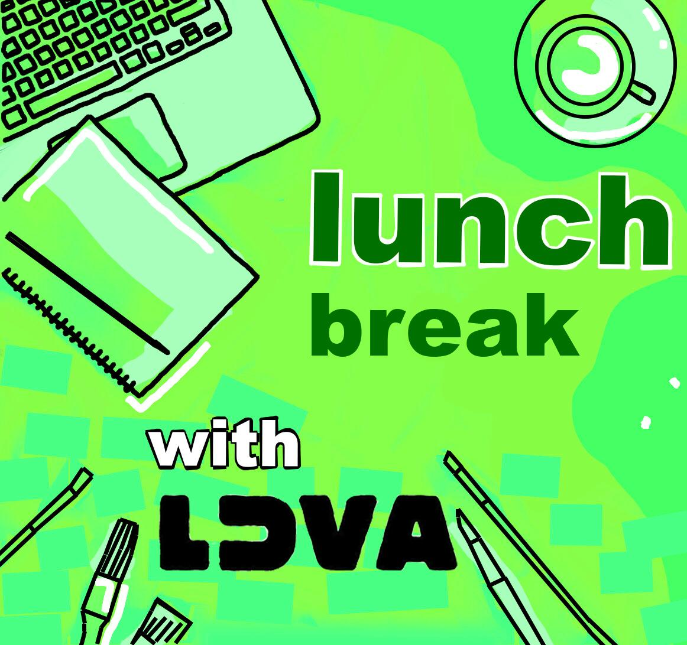

Getting tired of boring lunch breaks when working or studying from home? look no further because we’ve got
you covered. Everyday of the week commencing 15th March, we will be releasing short tutorial videos to
introduce you to new and creative
lunchtime activities.
Spice up your day and get those creative juices flowing; take a break with LDVA!
Combined, these workshop sessions will result in your own unique homemade zine. The following week on the
25th of March, we
are facilitating an 'Open Table' event. This will be an opportunity to share the work created and also to
socialize and get to know other creatives. We will be sharing what worked for us and how we all used the
different techniques to take a break and do something creative in our lunch times.
An introduction to zine binding to introduce you to some quick and easy techniques. Learn how to bind
your creations using Saddle Stitch, simple Japanese Stab binding as well as a single page folded zine.
This workshop is perfect for compiling all of your sketches and writings into one place. Don’t forget to
share your results by
using the hashtag #luvalunch
Cut 'n' Create lunchbreak workshop will see you create your own original inventions from repurposed
newspapers & magazines and creative drawing. Through the cutting up and reforming of words, let your
brain juices loose and create something bonkers; whether it be a futuristic machine or a new type of
food. Get off your screens and get creative this lunchbreak! Don’t forget to share your results by
using the hashtag #luvalunch
‘A moment to write’ workshop is designed to get people writing without any pressure. In the fast
paced world, sometimes you need a moment to sit and think. Using your different senses, this
workshop encourages you to observe your surroundings as a way to create a narrative. Taking this
time to pause can be used as a method of meditation and hopefully it helps you to unwind during
your lunch break! Don’t forget to share your results by using the hashtag #luvalunch
Welcome to my Pinhole camera workshop, after being so submerged in the digital for the last
year, let's throw it back to the analog. Making a pinhole camera is a super easy and cheap
way of capturing photographs at home. The earliest mention of a pinhole camera being used
was as early as the fifth century! Take on the challenge create like us humans have been
doing forever! Don’t forget to share your results by using the hashtag #luvalunch
In this workshop, I will be showing you ways of developing your photographs at home
using a chemical called caffenol (likely to be found in your kitchen cupboard)! No need
to spend all your money on an array of different chemicals, this method is way less
harmful to the environment, so how could you not! I hope you enjoy creating and
developing your photographs from start to finish. Don’t forget to share your results by
using the hashtag #luvalunch